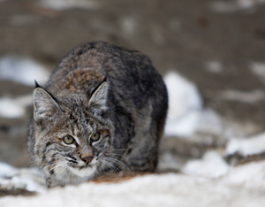

One day not long ago I had to pull myself out of my writerly trance, having become aware of a presence over my left shoulder. I turned my head slowly to meet the gaze of an adolescent bobcat at my window. Whether he meant to be the first to read the story on my computer screen, or was lured in by his own reflection in the quirky afternoon light, I can't say. I can tell you, though, that I held my breath and looked straight into bronze-colored bobcat eyes for longer than I knew I could hold my breath. After two moments (his and mine) that were surely not equal - for a predator routinely passes hours without an eye blink, while a human can grow restless inside 10 seconds - we broke eye contact.
He turned and minced away, languidly, tail flicking, for all the world a cat. I presume he returned to the routine conjectures and risks and remembered s cents that make up his bobcat life, and I returned to mine, mostly. But some part of my brain drifted after him for the rest of the day, stalking the taste of dove, examining a predator's patience from the inside.
It's a grand distraction, this window of mine. "Beauty and grace are performed," says Annie Dillard, "whether or not we will or sense them. The least we can do is try to be there." I agree, and tend to work where the light is good. This window is the world opening onto me. I find I don't look out, so much as it pours in.
I consider myself lucky beyond words to go to work every morning with something like wilderness at my elbow.
What I mean to say is I have come to depend on these places where I write. I've grown accustomed to looking up from the page and letting my eyes relax on a landscape upon which no human artifact intrudes. No steel, pavement, or streetlights, no architecture lovely or otherwise, no works of public art or private enterprise - no hominid agenda. I consider myself lucky beyond words to go to work every morning with these wild places at my elbow. In the way of so-called worldly things, I can't seem to muster a desire for kitchen gadgets or cable TV or to drive anything flashier than a dirt-colored sedan that is older than the combined ages of my children. My tastes are much more extreme: I want wood-thrush poetry. I want mountains.
It would not be quite right to say I have these things. The places where I write aren't exactly mine. In some file drawer we do have mortgages and deeds, pieces of paper (made of dead trees, mostly pine, I should think), which satisfy me in the same way that the wren yammering his territorial song from my rain gutter has satisfied himself that all is right with his world. I have my ostensible claim, but the truth is these places own me: They hold my history, my passions and my capacity for honest work. I find I do my best thinking when I am looking out over a clean plank of planet Earth. Apparently I need this starting point - the world as it appeared before people bent it to their myriad plans - in order to begin dreaming up my own myriad, imaginary hominid agenda.
And that is exactly what I do. I create imagined lives. I write about people, mostly, and the things they contrive to do for against, or with each other. I write about things like liberty, equality and world peace, on an extremely domestic scale. I don't necessarily write about wilderness, in general, or the places I happen to love, in particular.
On the cabin porch one summer not long ago, surrounded by summertime yard sales and tobacco auctions, I wrote about Africa, for heaven's sake. I wrote long and hard and well until I ended each day panting and exhilarated, like a marathon runner.
I wrote about a faraway place I once knew well, long ago, and that I have visited more recently on research trips, and whose history and particulars I have read about in books until I dreamed in the language of elephants. I didn't need to be in Africa as I wrote that book; I only needed to be where I could think straight, remember, and properly invent. I needed the blessed emptiness of mind that comes from birdsong and dripping trees. I needed to sleep at night in a square box made of chestnut trees who died of natural causes.
It is widely rumored, and mostly true, that I wrote my first novel in a closet. Before I get all rapturous and carried away here, I had better admit to that. The house was tiny, I was up late at night while people were sleeping, there just wasn't any other place. The circumstances were extreme. And if I have to - if the Furies should take my freedom or my sight - I'll go back to writing in the dark. Fish gotta swim, birds gotta fly, writers will go to stupefying lengths to get the infernal roar of words out of their skulls and onto paper. Probably I've tempted fate by announcing that I need to look upon wilderness in order to write. (I can hear those Furies sharpening their knives now, chuckling, Which shallit be, dearie? Penury or cataracts?) Let me back up and say that I am breathless with gratitude for the collisions of choice and luck that let me work under the full-on gaze of mountains and animate beauty. It's a privilege to live any part of one's life in proximity of nature. It is a privilege, apparently, even to know nature is out there at all. In the summer of 1996, human life on Earth made a subtle, uncelebrated passage from mostly rural to mostly urban. More that half of all humans now live in cities. The natural habitat of our species, then, officially, is steel, pavement, streetlights, architecture and enterprise - the hominid agenda.
With all due respect for the wondrous ways people amuse themselves and one another on paved surfaces, I find this exodus from the land makes me unspeakably sad. I think of the children who will never know intuitively, that a flower is a plant's way of making love, or what silence sounds like or that trees breathe out what we breathe in. I think of the astonished neighbor children who huddled around my husband in his tiny backyard garden, in the city where he lived years ago, clapping their hands to their mouths in pure dismay as he pulled carrots from the ground. (Ever the thoughtful teacher, he explained about fruits and roots and asked, "What other food do you think might be grown in the ground?" They knit their brows, conferred, offered brightly: "Spaghetti?") I wonder what it will mean for us to forget that food, like rain, is not a product but a process. I wonder how we will imagine the infinite when we have never seen how the stars fill a dark night sky. I wonder how I can explain why a wood-thrush song makes my chest hurt, to a populace for whom "wood" is a construction material and "thrush" is a tongue disease.
Oh, how can I say this: People will need wild places. Whether or not they think they do, they do. They need to experience a landscape that is timeless, whose agenda moves at the pace of speciation and ice ages. To be surrounded by a singing, mating, howling commotion of other species, all of whom love their lives as much as you do, and none of whom could possibly care less about your eco nomic status or your day-running calendar. Wilderness puts us in our place. It reminds us that our plans are small and somewhat absurd. It reminds us why, in those cases in which our plans might influence many future generations, we ought to choose carefully. Looking out on a clean plank of planet Earth, we can get shaken right down to the bone by the bronze-eyed possibility of lives that are not our own.
|
 PHOTO: ISTOCKPHOTO/AARON BENEDIK We draw knowledge and inspiration from the wild places that remain. Because the habitat of humans has transitioned from one dominated by flora and fauna to one of steel and concrete, the need to experience and appreciate wilderness is greater than ever. |
|
|